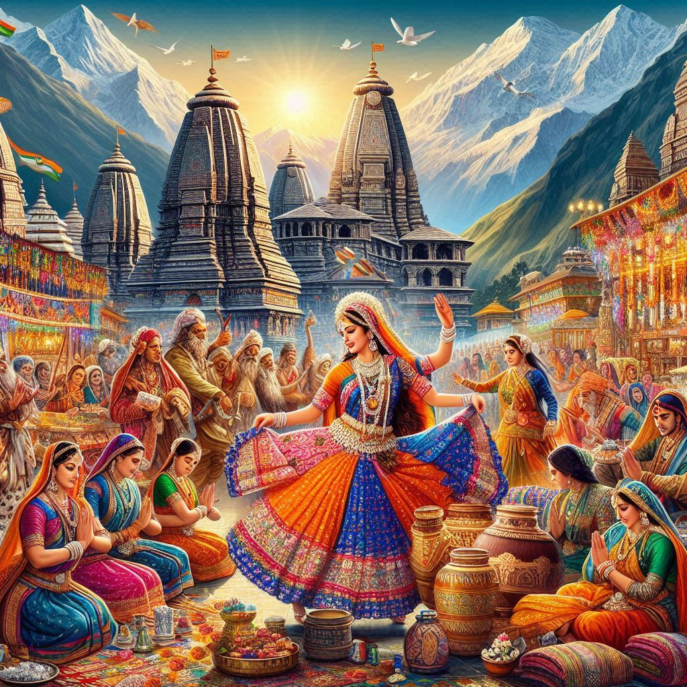
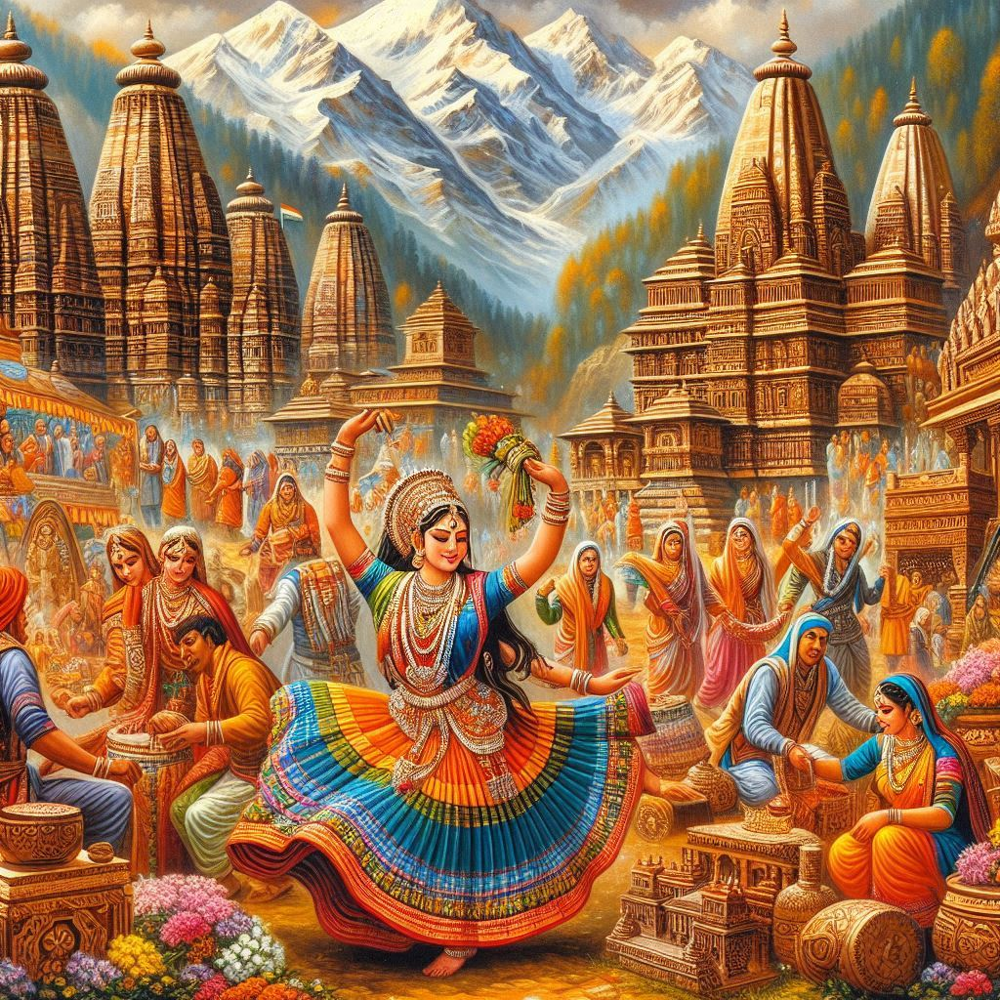

Uttarakhand, known as the "Land of the Gods," boasts a rich and diverse culture that is deeply influenced by its natural beauty, spirituality, and traditional practices. Here’s an overview of key aspects of Uttarakhand’s culture:
1. Festivals
- Kumbh Mela: Held every 12 years, this major Hindu pilgrimage attracts millions of devotees to Haridwar, where they bathe in the Ganges River to cleanse themselves of sins.
- Makar Sankranti: Celebrated with great enthusiasm, this festival marks the transition of the sun into the zodiac sign of Capricorn. People prepare special dishes like til laddoos and kite flying is a common activity.
- Harela: A traditional festival that celebrates the onset of the monsoon season, marked by the planting of saplings and the preparation of special dishes.
2. Religion and Spirituality
- Temples: The state is home to numerous ancient temples, including the famous Badrinath and Kedarnath shrines, which are part of the Char Dham pilgrimage.
- Pilgrimage Sites: Uttarakhand is considered a holy land, with various pilgrimage routes and sites dedicated to Hindu deities, attracting spiritual seekers from across the country.
3. Traditional Arts and Crafts
- Handicrafts: The region is known for its vibrant handicrafts, including wooden carvings, handwoven textiles, and silver jewelry. The Aipan art, a form of floor painting, is also notable.
- Garhwali and Kumaoni Art: Traditional art forms often reflect local themes, nature, and mythology.
4. Dance and Music
- Folk Dances: Traditional folk dances like Choliya (performed during weddings) and Langvir Nritya are integral to local culture, often showcasing vibrant costumes and rhythmic movements.
- Folk Music: The folk music of Uttarakhand, with instruments like the dhol and mandal, is characterized by its melodious tunes that narrate tales of love, nature, and folklore.
5. Cuisine
- Local Dishes: The cuisine is primarily vegetarian and includes dishes like aaloo ke gutke (spiced potatoes), kafuli (spinach and fenugreek curry), and phaanu (rice and lentils).
- Sweets: Traditional sweets like bal mithai and singhori are popular, often made from local ingredients and reflecting the region's flavors.


6. Language and Literature
- Languages: Hindi is widely spoken, along with regional dialects such as Garhwali and Kumaoni. These languages enrich the cultural fabric and are used in folk songs and stories.
- Literary Contributions: The state has produced many poets and writers who have contributed to Hindi literature, often drawing inspiration from the natural beauty and cultural heritage of the region.
7. Lifestyle and Community
- Agriculture: The agrarian lifestyle is prevalent, with farming being a primary occupation. Terraced fields and traditional farming methods are common sights.
- Community Living: The close-knit community structure emphasizes cooperation and collective celebrations of festivals and rituals.
Conclusion
Uttarakhand's culture is a vibrant blend of tradition, spirituality, and the natural environment. Its festivals, arts, music, and culinary traditions reflect the deep connection of its people to their land and heritage. Visitors to Uttarakhand can immerse themselves in this rich cultural experience while exploring its stunning landscapes and spiritual sites.